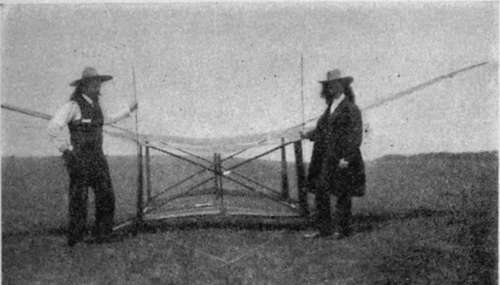
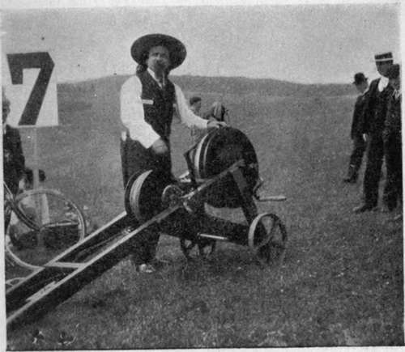
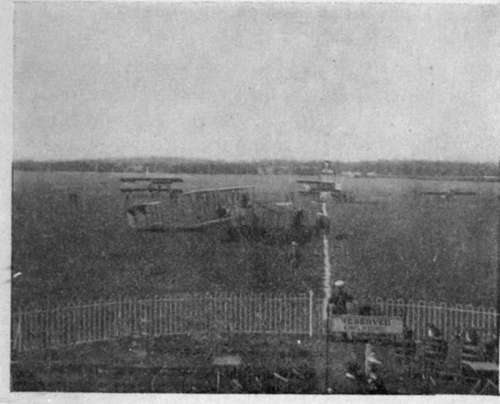

Heroes Of Flight. Continued
Description
This section is from the book "All About Flying", by Gertrude Bacon. Also available from Amazon: All About Flying.
Heroes Of Flight. Continued
But even before this momentous year of 1909 there had been flying in these islands, though few knew and fewer still regarded it. In the autumn of 1908, when the Wright Brothers first began to show their powers, a young man was experimenting with a triplane on Lea Marshes. His name was A. V. Roe, and scoffers called him 'Roe the Hopper ' from the nature of the progress that his machine made across the grass. How could it have been otherwise when the engine that drove it was of only 9 horsepower ! The marvel was it ever rose at all. The splendid Avroplanes already referred to are the lineal descendants of this first 'All British' aeroplane that hopped and jumped over the fields so many years ago.
And about the same time Cody at Farnborough was first getting off the ground in the big army biplane, the first officially observed flights of which were made in January 1909—seven months before Bleriot flew the Channel. The picturesque figure of Samuel F. Cody will ever loom large among the pioneers of flight, for he was a big man, in stature, in genius and in heart. Originally of Irish stock, he hailed from Texas, and first appeared in a Wild West show ; which fact, combined with his long hair and sombrero hat, led to the general but erroneous belief that he was, or at least was connected with, Colonel Cody, the original Buffalo Bill. His hobby was kite-flying, and presently he succeeded in introducing his big man-lifting kites into the British army and was given an official position at the Balloon Factory at Farnborough. While there he turned his attention to the construction of a large flying machine, and when his connection with the Balloon Factory came to an end he was presented with the aeroplane he had built and given leave to practise with it over Laffan's Plain. Before the year was out he had made the world's record by a cross-country flight of 40 miles round Aldershot. Incidentally he had cut his locks and become a British subject.
(J.M. Bacon)
Cody And His Kite.
S. P. Cody In 1903.
(J. M. Bacon)
With the dawn of 1910 aviation was fully established in England and had clearly come to stay. The Royal Aero Club began to grant certificates to British aviators. By the end of the year they had granted 50, and the French Aero Club 300. In April came the London to Manchester race for the first Daily Mail £10,000 prize; an historic event full of dramatic surprises, which, although it resulted in the Frenchman Paulhan's win, yet placed Grahame-White upon that pinnacle of popular favour which he has occupied ever since. Flying meetings were held at Wolverhampton, Bournemouth, Lanark and elsewhere. Bournemouth was the scene of the first British aviation disaster—the death of Rolls, beloved pioneer, and magnificent flyer, an irreparable loss to the cause he had made his own. Robert Loraine, picturesque combination of actor and aviator, flew the Irish Channel. Sopwith made a magnificent non-stop flight on a Howard Wright biplane from Kent across France into Belgium. Chavez surmounted the Alps, 6600 feet high, at the Simplon Pass, and died pathetically in his hour of victory. Cecil Grace disappeared into the chill December mist brooding over the Channel, never to be seen again.
This year saw also the opening of two famous English Aerodromes, Brooklands and Hendon. It was a happy thought which converted the space enclosed by the famous motor track into a flying ground which has been the scene of so many great aviation events. It was a yet more enterprising scheme of Grahame-White and his company to evolve the London Aerodrome at Hendon, and while proving a highly successful commercial venture, it undoubtedly conduced more than any other undertaking to popularize aviation in this country. It was reckoned a poor gate at Hendon before the War if less than 10,000 people were present on a Saturday or Sunday afternoon, and on Aerial Derby Days and such like the numbers rose to 60,000 ; so that a year's attendance had actually to be written in seven figures. Undoubtedly the 'Hendon habit' has grown upon the people of London, and with the exception of the great German flying ground of Johannisthal near Berlin, the scene of the utmost activity and preparation before the outbreak of hostilities, our London Aerodrome became at once the most popular in the world.
The London Aerodrome, Hendon.
1911 was the year of the great cross-country races, Paris to Rome, Paris to Madrid, the Circuit of Europe, and, in our own country, the Circuit of Britain for the second £10,000 prize offered by that munificent patron the Daily Mail. 'Beaumont' or Lieutenant Conneau of the French navy, and Vedrines were the heroes of all these great races, and besides them Valentine and Cody alone completed the thousand-mile tour of the British Isles.
The outstanding features of 1912 were the appearance of the hydro-aeroplane and the waking up of the Government to the naval and military importance of flight. In March was founded the Royal Flying Corps, with military and naval wings. Military aeroplane competitions took place on Salisbury Plain in August. Aeroplanes played a recognized part for the first time in the army manoeuvres, flying stations were established in different places, and the army and naval pilots began the magnificent work they have carried on so efficiently ever since. Wilbur Wright died of typhoid this year, Latham was killed by a buffalo in Africa, and accidents in the air cost too many valuable lives. On the Continent Vedrines flew at 100 miles an hour, Garros carried the height record up to 19,000 feet, and Fourny flew a Maurice Farman biplane for 632 miles in 13 hours 17 minutes without stopping.
In 1913 long distance cross-country flights came more and more into fashion. In our own country, which is not suited for record making of this sort, army flyers flew from Montrose to Limerick, 375 miles, including the passage of the Irish Channel, in a day, and from Farnborough to Montrose without a stop. Non-stop flights were made from Paris to Berlin, from Paris to Bordeaux and back (646 miles), and 500 miles across the Mediterranean from France to Africa. Vedrines flew from France to Cairo on a Bleriot monoplane, and Bonnier also on a Nieuport toured all across Europe and Asia Minor to Jerusalem and thence into Egypt.
Hawker very nearly completed the circuit of the British Isles on a Sopwith sea-plane with a Green engine. Pegoud introduced a wonderful new thrill by ' looping the loop ' and flying upside down, in which he was very soon imitated by Hucks and Hamel, the first Englishmen to perform this now common feat. In August Cody was killed, with a passenger, and the whole world grieved the loss of a great and dearly loved pioneer. No other aviation fatality was so deeply and widely felt until, the following May, Gustav Hamel, easily first among British pilots for skill and popularity, attempted to fly the Channel on a foggy day, and, like Grace, passed from our ken never to be heard of more.
In those days Germany began turning her attention to aviation, military and otherwise, with characteristic thoroughness, so that by the middle of 1914 nearly all the world's big flying records, especially those requiring strength and staying power, had been captured by German aviators, flying German machines with German motors—e.g. 1350 miles flown in one day by Stoeffler, 21,450 feet (almost five miles) attained by Oelerich, and the Duration Record of 24 hours, 10 minutes, achieved by Boehm. They did not, however, beat the Speed Record of well over two miles a minute made by the Frenchman Prevost at the 1913 Gordon-Bennett Race.
In July 1914 the naval wing of the Royal Flying Corps was reorganized as the Royal Naval Air Service. The very start of naval flying was but three years previously, when Frank McClean lent three Short biplanes to the Admiralty to be used for instruction purposes, and Cockburn, at his own expense, taught four naval officers (all of high rank in the new service) to fly. To-day these gentlemen can be proud of what their patriotic and unselfish efforts have led to.
Continue to: